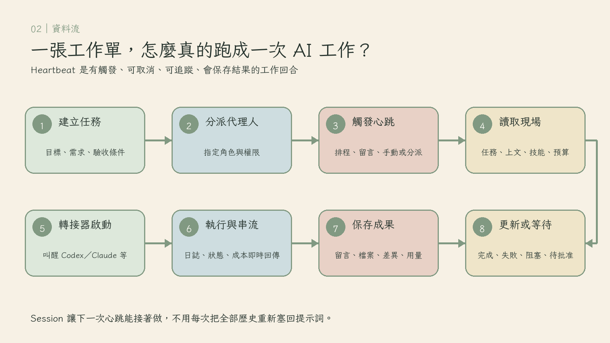

先讀這一頁
這不是寫作紀錄，是產品拆解日誌
我被吸引的是儀表板，但拆開後才知道：真正厲害的不是畫面，而是它先把 AI 重新想成「有職位、有主管、有工作單、有預算、會回報的員工」。
你會看懂
- 概念從哪裡來
- 為什麼介面像公司儀表板
- 用了什麼技術與資料物件
- 任務如何真正叫醒 AI
- 小白如何做最小版本
證據怎麼讀
- 官方確認：官方文件、原始碼或版本紀錄可直接證實。
- 本冊歸納：依多個官方線索整理出的解釋。
- 小白建議：為初學者縮小範圍的實作方案，不假裝是官方作法。
版本邊界：查證快照為 2026-11-14 的 master commit 36101eb。Paperclip 快速更新，功能名稱可能變動，但核心思路仍可學。
01｜概念創意
它不是先想「畫一個漂亮看板」
它先看見：當你同時使用多個 AI，問題不再是「AI 會不會回答」，而是「工作會不會失控」。
看不見不知道每個 AI 現在在做什麼
對不齊任務與大目標沒有連結
接不上重開後又從頭解釋
算不清成本、執行時間與成果分散
管不住高風險動作沒有權限與審批
重新定義問題：當整個工作團隊都是 AI，我們需要的不是更多聊天視窗，而是一個「AI 公司的控制平面」。
控制平面像機場塔台：不替飛機飛，卻知道誰要起飛、誰在等待、跑道能不能用、哪個動作必須批准，以及出事時怎麼停。
01｜概念創意
五個人類公司隱喻，降低理解門檻
| 人類公司 | Paperclip | 真正用途 |
|---|
| 公司目標 | Goal | 保留「為什麼做」，讓任務能往上追 |
| 員工與主管 | Agent / Org Chart | 定義角色、專長、上下級與責任 |
| 工作單 | Task / Issue | 保存需求、上文、成果、阻礙與狀態 |
| 打卡開工 | Heartbeat | 用排程、分派、留言或手動方式叫醒 AI |
| 財務與內控 | Budget / Approval / Activity | 限制成本、批准風險動作、留下紀錄 |
一句話AI 是員工；Paperclip 是公司制度、派工台和監控中心。
官方 README 的原始比喻是：「如果 OpenClaw 是員工，Paperclip 就是公司。」本冊把它延伸成小白可理解的公司模型。
02｜UI / UX
首頁只要先回答四個問題
01現在有哪些工作正在進行？讓人看到整體流量與進度。
02哪個 AI 正在做哪一件事？把責任人與任務直接綁在一起。
03哪裡卡住、失敗或在等我？例外應比正常狀態更醒目。
04成本與成果仍在可接受範圍嗎？用量、預算與驗收不能放在最後。
UI 的真正原則：先給狀態，再給細節；用一套狀態語言貫穿全站；進階設定在需要時才出現；手機畫面仍能監看、批准、暫停與補指示。
因此「儀表板感」不是卡片越多越好，而是狀態、責任、例外與下一步都在一眼可掃的位置。
03｜功能系統
官方的四根支柱：工作、組織、能力、基礎設施
WORK代理式任務管理
目標、任務、留言、成果、執行與審批在同一條工作線。
ORGAI 組織圖
每個 AI 有職位、主管、專長、預算與責任範圍。
SKILLAI 員工訓練
技能可安裝、版本化、測試、注入與回復，不只是一段提示詞。
OS代理式作業系統
轉接器、心跳、Session、權限、事件與儲存把工作真正跑起來。
設計判斷功能不是彼此獨立；任務是主線，組織決定誰做，技能決定怎麼做，基礎設施確保能安全地做完。
04｜實際技術
官方目前的技術組合
前端React 19 · TypeScript
Vite 8 · React Router 7
TanStack Query · Tailwind 4
後端Node.js 24+ · Express 5
WebSocket · Zod
Better Auth · MCP / AI SDK
資料PostgreSQL
Drizzle ORM
embedded-postgres
工程pnpm monorepo
Docker · CLI
Vitest · Playwright · Storybook
白話翻譯：React 負責畫面；Express 負責 API；PostgreSQL 保存公司與工作狀態；WebSocket 把 AI 的即時狀態推回畫面；Adapter 負責叫醒不同 AI；測試工具確保每次改版不把流程弄壞。
證據狀態：官方原始碼中的 package manifests、routes、database schema 與 runtime 文件確認。
05｜運作流程
一張工作單如何跑成一次 AI 工作

Heartbeat 不是一般網站的健康檢查。在 Paperclip 裡，它是一個有工作上文、有時間邊界、可取消、會回傳狀態並保存結果的執行回合。
05｜運作流程
Session 是「下次接著做」的關鍵
第一次心跳讀任務 → 啟動 AI → 產生 session id → 保存日誌與成果
任務有新留言Paperclip 觸發下一次 heartbeat，找到原 session
第二次心跳恢復原工作現場 → 接著做 → 只補充新指示
沒有 Session
每次都把全部歷史塞回提示詞；又慢、又貴，也容易漏掉狀態。
保存 Session
執行器可從原現場接續；控制平面仍保存獨立的任務與事件紀錄。
核心持續工作靠的不是「AI 記性很好」，而是系統有意識地保存與恢復工作現場。
06｜產品怎麼長出來
官方版本紀錄顯示：先骨架，再執行，最後平台化
- 先立產品觀念與工程骨架產品文件、共享型別、資料庫、API Server、React UI。
- 先把最小公司模型做完整Company、Task、Agent、Approval、Cost、Heartbeat、Dashboard。
- 讓 AI 真的能被叫醒runtime schema、service、WebSocket、adapter、CLI 與 live output。
- 補治理與接續chain of command、session、secret、storage、permission、mobile。
- 再從工具走向平台plugin、skill、apps/connections、teams、routines、artifacts。
小白最值得學的順序：不是先蒐集所有想要的功能，而是先建立資料真相，再做一條真的能跑完的任務循環，最後才把例外聚合成儀表板。
最早可查的骨架提交是 2026-02-16 的 481b3a4，提交訊息為「Add project scaffolding and infrastructure config」。
07｜照著做
第一版只要回答五件事
02目前有哪些任務？待辦、進行、等待、完成、失敗。
04現在跑到哪裡？Run 與 Event 保存真實狀態。
05人要在哪裡批准、停止或驗收？只要自動化會碰檔案、帳號、付款、對外傳送或刪除，就必須設清楚的人類控制點。
第一版範圍一個目標、五張表、一種 AI、一條任務循環、一個手機儀表板。
07｜照著做
小白版工具選擇：先少、先熟、先跑通
| 需要 | 建議工具 | 選它的理由 |
|---|
| 畫面與 API | Next.js + TypeScript | 同一個專案完成頁面和後端入口，部署容易 |
| 資料庫 | Supabase / PostgreSQL | 表格關係清楚，也有登入與即時能力 |
| 介面元件 | Tailwind CSS + shadcn/ui | 快速做出一致的卡片、表格與響應式版面 |
| AI 執行 | 先接單一 CLI 或 API | 先把一條資料流跑通，避免多轉接器除錯 |
| 即時狀態 | 先輪詢，穩定後再 WebSocket | 第一版簡單優先；流量大再升級 |
| 部署 | Vercel + Supabase | 少維運、手機直接開網址測試 |
注意：這一頁是本冊的小白建議，不是 Paperclip 官方技術選型。官方目前是 React/Vite + Express + PostgreSQL 的大型 monorepo。
08｜安全與驗收
自動化越強，停止、權限與驗證越不能省
Allowed低風險、可逆、範圍明確的讀取與處理
Ask first對外傳送、付費、刪除、帳號權限、公開發布
Off沒有明確必要、範圍過大或無法回復的能力
驗收不要只看 AI 說「完成」
- 成果檔案是否真的存在、能打開？
- 執行日誌與事件是否對得上狀態？
- 成本、時間、錯誤與重跑是否都有紀錄？
- 高風險動作是否經過批准？
- 手機能否看見需要我處理的例外？
最低安全線：執行型 AI 不要直接拿整台電腦與所有密鑰；用工作目錄、最小權限、可取消程序與明確工具清單縮小影響範圍。
08｜避免踩坑
五種「看起來像，實際上不是」
- 只有漂亮儀表板卡片數字沒有 Run / Event 支撐，只是裝飾。
- 把聊天紀錄當任務系統無法查責任、狀態、阻礙、驗收與重跑。
- 第一天就做多代理人錯誤來源倍增，卻沒有先證明單一循環。
- 讓 AI 直接拿整台電腦沒有最小權限、工作目錄、審批與停止。
- 只用顏色表達狀態手機、無障礙與截圖情境都容易誤判。
產品判準好工具不是讓人覺得「AI 很忙」，而是讓人知道工作是否朝目標前進、何時需要介入，以及成果能否被驗證。
SOURCES & NEXT
官方來源與你的下一步
現在可以做拿一張紙，先畫出「誰下單 → AI 怎麼被叫醒 → 結果存在哪裡 → 誰驗收」。只要這條線說得清楚，你已經開始做真正的工具，而不是做儀表板外觀。
完整技術細節、資料表與 API 草圖請見同資料夾的 Markdown／Word 版本。查證日期：2026-11-15。